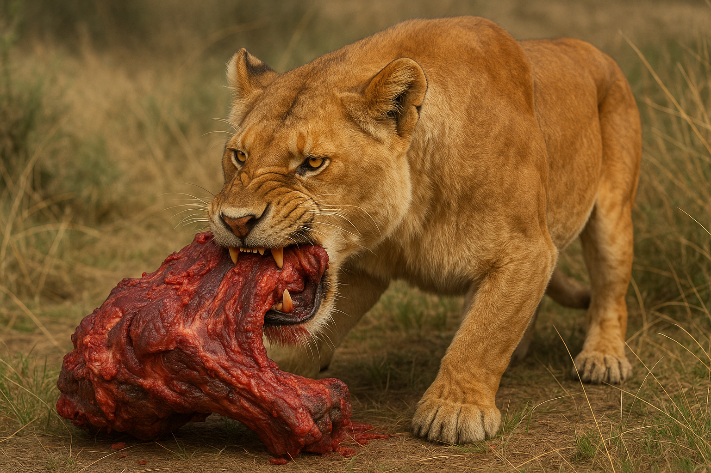
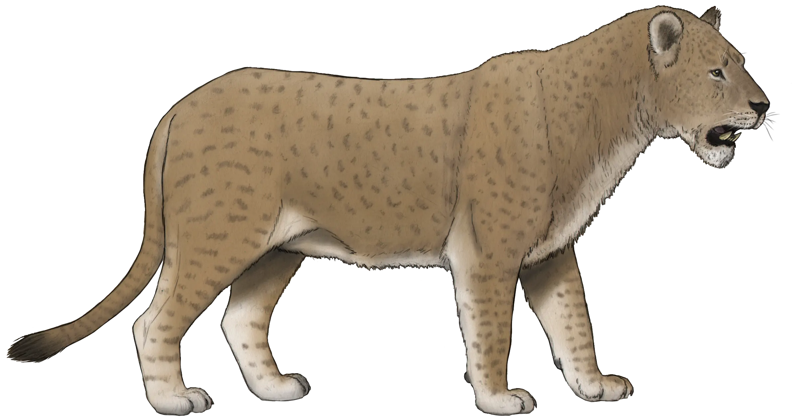
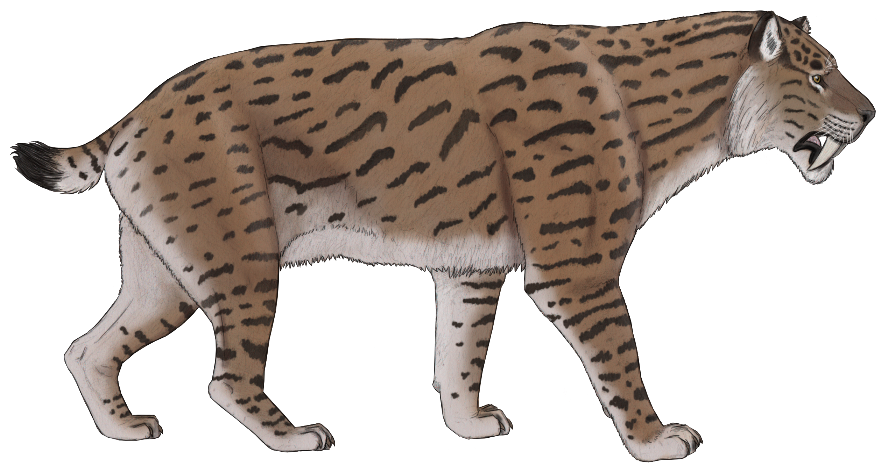

Museo De Paleontología SEMAHN
-
Inicio
-
Otras publicaciones
Carnivoros
Garras y dientes: el reino de los carnívoros en Chiapas prehistórico
Museo de Paleontología SEMAHN
Inicio
Otras publicaciones
Museo De Paleontología SEMAHN
Inicio
Otras publicaciones
Garras y dientes: el reino de los carnívoros en Chiapas prehistórico
Los carnivoros son un clado de los mamíferos placentarios que incluye alrededor de 260 especies actuales. El orden de Carnivora, perteneciente al clado Ferae, es el orden de mamíferos con una mayor diversidad de tamaño entre sus integrantes, variando desde la pequeña comadreja común, con un peso de 25g y 11cm, hasta el oso polar, que puede pesar hasta 1,000kg, y el elefante marino del sur, cuyos machos adultos pesan hasta 5,000kg y miden 6,90m de largo. Los carnivoros desplazaron al orden más antiguo de mamíferos de dieta carnivora denominado Creodonta; y terminarían por ocupar sus nichos ecológicos, lo que contribuyó a la extinción de los creodontes. Los carnivoros son en su mayoría terrestres, la mayor parte tiene garras afiladas y mínimo cuatro dedos en cada extremidad y caninos muy desarrollados, los molares y premolares por lo general tienen bordes cortantes.
La mayoría de carnivoros cubren sus necesidades de carne cazando o comiendo carroña. Sin embargo, una gran proporción de carnivoros son omnívoros, es decir, lo que significa que también comen otros alimentos como bayas o hierbas además de carne. Muchos depredadores más pequeños, como las mangostas, pero también algunas especies más grandes, como el zorro orejudo, el lobo de tierra y el oso perezoso, se alimentan principalmente de invertebrados, sobre todo insectos.

El león americano fue una especie de mamífero carnívoro de la familia de los félidos, extinta desde al rededor del año 10,000 a.C., que habitó en el oeste de América del Norte durante el Pleistoceno. Está relacionada con el león africano. Suele recibir el nombre común de león americano, el cual, fuera de contexto, pueden llevar a confusiones con el puma y el león cavernario de Eurasia, respectivamente, que también son conocidos por esos nombres. P. spelaea estaba estrechamente emparentado con P. atrox, que probablemente se originó a partir de una población de leones cavernarios que cruzaron el puente de Beringia, puente de tierra que, durante la última glaciación, comunicaba Siberia con Alaska.

